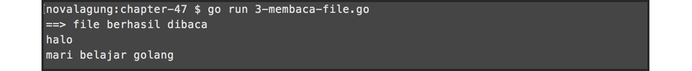

A.50. File
Ada beberapa cara yang bisa digunakan untuk operasi file di Go. Pada chapter ini kita akan mempelajari teknik yang paling dasar, yaitu dengan memanfaatkan os.File.
A.50.1. Membuat File Baru
Pembuatan file di Go sangatlah mudah, cukup dengan memanggil fungsi os.Create() lalu memasukkan path file yang ingin dibuat sebagai parameter. Jika ternyata file yang akan dibuat sudah ada, maka akan ditimpa. Bisa memanfaatkan os.IsNotExist() untuk mendeteksi apakah file sudah dibuat atau belum.
Berikut merupakan contoh pembuatan file.
package main
import "fmt"
import "os"
var path = "/Users/novalagung/Documents/temp/test.txt"
func isError(err error) bool {
if err != nil {
fmt.Println(err.Error())
}
return (err != nil)
}
func createFile() {
// deteksi apakah file sudah ada
var _, err = os.Stat(path)
// buat file baru jika belum ada
if os.IsNotExist(err) {
var file, err = os.Create(path)
if isError(err) { return }
defer file.Close()
}
fmt.Println("==> file berhasil dibuat", path)
}
func main() {
createFile()
}
Fungsi os.Stat() mengembalikan 2 data, yaitu informasi tetang path yang dicari, dan error (jika ada). Masukkan error kembalian fungsi tersebut sebagai parameter fungsi os.IsNotExist(), untuk mendeteksi apakah file yang akan dibuat sudah ada. Jika belum ada, maka fungsi tersebut akan mengembalikan nilai true.
Fungsi os.Create() digunakan untuk membuat file pada path tertentu. Fungsi ini mengembalikan objek *os.File dari file yang bersangkutan. File yang baru terbuat statusnya adalah otomatis open, maka dari itu perlu untuk di-close menggunakan method file.Close() setelah file tidak digunakan lagi.
Membiarkan file terbuka ketika sudah tak lagi digunakan bukan hal yang baik, karena efeknya ke memory dan akses ke file itu sendiri, file akan di-lock sehingga tidak bisa digunakan oleh proses lain selama status file masih open atau belum di-close.

A.50.2. Mengedit Isi File
Untuk mengedit file, yang perlu dilakukan pertama adalah membuka file dengan level akses write. Setelah mendapatkan objek file-nya, gunakan method WriteString() untuk pengisian data. Terakhir panggil method Sync() untuk menyimpan perubahan.
func writeFile() {
// buka file dengan level akses READ & WRITE
var file, err = os.OpenFile(path, os.O_RDWR, 0644)
if isError(err) { return }
defer file.Close()
// tulis data ke file
_, err = file.WriteString("halo\n")
if isError(err) { return }
_, err = file.WriteString("mari belajar golang\n")
if isError(err) { return }
// simpan perubahan
err = file.Sync()
if isError(err) { return }
fmt.Println("==> file berhasil di isi")
}
func main() {
writeFile()
}
Pada program di atas, file dibuka dengan level akses read dan write dengan kode permission 0664. Setelah itu, beberapa string diisikan ke dalam file tersebut menggunakan WriteString(). Di akhir, semua perubahan terhadap file akan disimpan dengan dipanggilnya Sync().

A.50.3. Membaca Isi File
File yang ingin dibaca harus dibuka terlebih dahulu menggunakan fungsi os.OpenFile() dengan level akses minimal adalah read. Setelah itu, gunakan method Read() dengan parameter adalah variabel, yang di mana hasil proses baca akan disimpan ke variabel tersebut.
// tambahkan di bagian import package io
import "io"
func readFile() {
// buka file
var file, err = os.OpenFile(path, os.O_RDONLY, 0644)
if isError(err) { return }
defer file.Close()
// baca file
var text = make([]byte, 1024)
for {
n, err := file.Read(text)
if err != io.EOF {
if isError(err) { break }
}
if n == 0 {
break
}
}
if isError(err) { return }
fmt.Println("==> file berhasil dibaca")
fmt.Println(string(text))
}
func main() {
readFile()
}
Pada kode di atas os.OpenFile() digunakan untuk membuka file. Fungsi tersebut memiliki beberapa parameter.
- Parameter pertama adalah path file yang akan dibuka.
- Parameter kedua adalah level akses.
os.O_RDONLYmaksudnya adalah read only. - Parameter ketiga adalah permission file-nya.
Variabel text disiapkan bertipe slice []byte dengan alokasi elemen 1024. Variabel tersebut bertugas menampung data hasil statement file.Read(). Proses pembacaan file akan dilakukan terus menerus, berurutan dari baris pertama hingga akhir.
Error yang muncul ketika eksekusi file.Read() akan di-filter, ketika error tersebut adalah selain io.EOF maka proses baca file akan berlanjut. Error io.EOF sendiri menandakan bahwa file yang sedang dibaca adalah baris terakhir isi atau end of file.

A.50.4. Menghapus File
Cara menghapus file sangatlah mudah, cukup panggil fungsi os.Remove(), masukan path file yang ingin dihapus sebagai parameter.
func deleteFile() {
var err = os.Remove(path)
if isError(err) { return }
fmt.Println("==> file berhasil di delete")
}
func main() {
deleteFile()
}